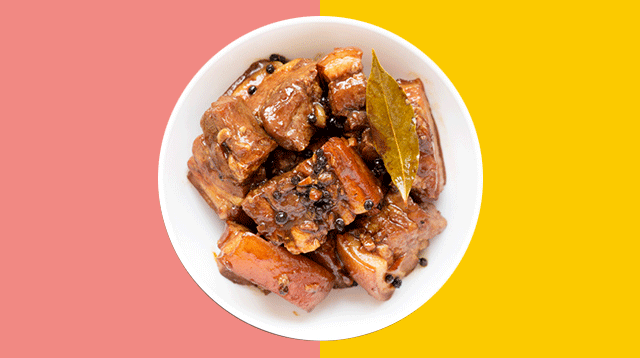

Adobo

Description
Adobo is the closest thing to a national dish in the Philippines,consisting of seared and browned chunks of meat, seafood, fruit, or vegetables mixed with white vinegar or soy sauce (or both), bay leaves, garlic, salt, sugar, oil, and black pepper.
The combination of these ingredients is left to simmer over low heat, resulting in succulent, juicy, and tender ingredients covered in thick, rich, and savory sauce. Adobo got its name from the Spanish word adobar, meaning marinade or pickling sauce. The most popular adobo dishes include local favorites such as chicken, beef, or pork adobo, white adobo, crispy adobo, squid adobo, and water spinach adobo. The dish is traditionally served over white rice, an ideal accompaniment that absorbs the tangy sauce.
Ingredients
- 2 lbs pork belly see note 1
- 2 tablespoons garlic see note 2
- 5 dried bay leaves see note 3
- 4 tablespoons vinegar see note 4
- 1/2 cup soy sauce see note 5
- 1 tablespoon peppercorn see note 6
- 2 cups water
- Salt to taste
Instructions
- Combine the pork belly, soy sauce, and garlic then marinade for at least 1 hour
- Heat the pot and put-in the marinated pork belly then cook for a few minutes
- Pour remaining marinade including garlic
- Add water, whole pepper corn, and dried bay leaves then bring to a boil. Simmer for 40 minutes to 1 hour
- Put-in the vinegar and simmer for 12 to 15 minutes
- Add salt to taste
- Serve hot. Share and enjoy
Notes
- Pork belly is the most common cut of pork to use for adobo, but you can also use other cuts as long as it has some fat content. Fat makes the meat moist. I suggest using pork shoulder as an alternative cutPork belly is the most common cut of pork to use for adobo, but you can also use other cuts as long as it has some fat content. Fat makes the meat moist. I suggest using pork shoulder as an alternative cut.
- Filipino adobo wont be the same without garlic. The more garlic I use, the better my adobo is (in my opinion). Crush the garlic using a mortar and pestle tool or the side of your knife before cooking. This ensures that the flavors are quickly extracted from it.
- Bay leaves or Laurel leaves is a must for this recipe. Dried bay leaves are the most commonly used due to its availability. Fresh bay leaves is good too.
- Use white vinegar. If this is not available, either cane or rice vinegar can be used as substitutes.
- I use Filipino brand soy sauce all the time. In my opinion, using other kinds of soy sauce affects the authentic flavor of the dish.
- Whole peppercorns are ideal. However, you can use cracked pepper or ground pepper for this recipe.
Home